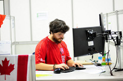
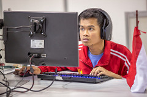
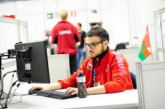

Web Design encompasses many different skills and disciplines in the production and maintenance of websites. The diversity of the skills required by a web developer are many, often to the point it is difficult for a web designer to excel in all aspects. As a result, a team may cover the Web Design process, with each member of the team having their own strengths, specialties and role in the development process.
TWeb Design involves implementing specific solutions that follow the business rules and objectives outlined by the client. Web Designers develop a professional relationship with their clients, interacting with them in order to develop a deep understanding of the requirements and convert these into a website specification. Strong design and communication skills, coupled with research techniques and a grasp of target audiences, markets and trends, will ensure initial client satisfaction and credibility for the Web Designer.
Having completed the website planning and design, the Web Designer then integrates the website with third party tools and platforms. During the development process web designers design and develop the databases, create programs, tests and debug the website. The current trend is to also integrate the website with Social Media and take advantage of the leverage these modern platforms bring.
All these skills may apply equally to the re-design or an upgrade of an existing website. A Web Designer has many employment opportunities. This can range from being a self-employed freelancer to being employed by media organizations and advertising agencies. Web Designer positions may be broad in scope or specialize in an area such as Graphic Design, Client Management, Front End Development, Back End/Server Side Development and User End Designer. Whichever role a web designer chooses to specialize in they will need to have access to ICT facilities, open source libraries and frameworks.
High performing Web Designers may have broad or specialist web-related skills. However, to excel they must have a strong grasp of copyright law and a well-developed personal code of ethics. They must understand artistic values, and take personal responsibility for being constantly at the forefront of trends and web technology. They must also be responsive to clients and have the ability to work in structured and unstructured teams and groups. These qualities enable the Web Designer to contribute and take advantage of this rapidly developing aspect of modern communications technology.
The WorldSkills Competition is our flagship event, held every two years and is the biggest vocational education and skills excellence event in the world that truly reflects global industry. The Competitors represent the best of their peers and are selected from skill competitions in WorldSkills Member countries and regions. They are all under the age of 23 years (except for four skills that have the age limit of 25). They demonstrate technical abilities both individually and collectively to execute specific tasks for which they study and/or perform in their workplace.
One of the main legacies of the WorldSkills Competitions is to give visibility and importance to professional education, as one of the true tools of socioeconomic transformation.
The Competition also provides leaders in industry, government and education with the opportunity to exchange information and best practices regarding industry and professional education. New ideas and processes inspire school-aged youth to dedicate themselves to technical and technological careers and towards a better future.
In order to compete at the WorldSkills Competition, a Competitor has to come from a Member country/region. Members have different ways of selecting their team members so it is best to contact the Member in your country/region.
A Competitor at the WorldSkills Competition must not be older than 22 in the year of the Competition. Competitors in Information Network Cabling, Mechatronics, Manufacturing Team Challenge, and Aircraft Maintenance, must not be older than 25 years in the year of the Competition.
